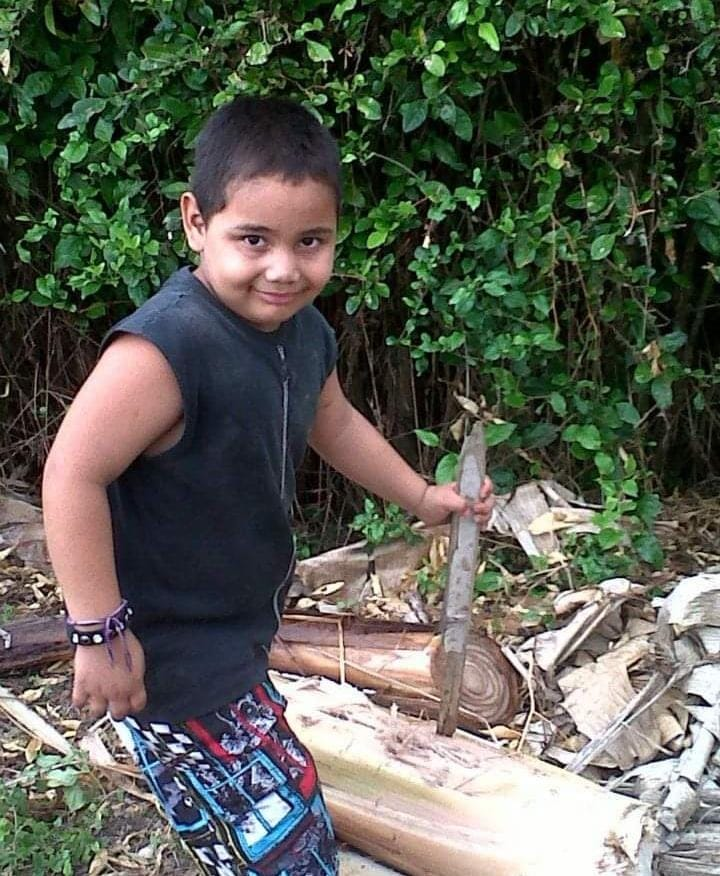

Mi historia
Todo comenzó el día 5 de octubre del año 2005 con un trabajo de parte adelantado dos meses de lo habitual, ya que al séptimo mes de embarazo yo nací, un niño sano, sin ningún tipo de problema, vivíamos en la ciudad de Pereira para ese entonces, hasta que cumplí la edad de dos años, ya que estaba comenzó a presentar problemas respiratorios y mantenía en el hospital por ese tema, mi madre y padre estaban muy tristes ya que no sabían que hacer ya que habían intentado de todo para curarme pero yo seguía recayendo, hasta que un día un doctor les recomendó que nos mudáramos para un lugar coloquialmente llamado tierra caliente, mis padres sin saber que mas hacer, tomaron la decisión de mudarnos para el pueblo llamado “la Unión”, este es un pueblo que queda en el valle del cauca, este queda más o menos a dos horas de la ciudad. No se les hizo duro comenzar de nuevo allí, ya que en ese pueblo teníamos a toda nuestra familia, tanto familiares de mi madre, como familiares de mi padre. Después de mudarnos para la Unión, mi salud comenzó a mejorar poco a poco, hasta recuperarme por completo. Mi infancia no fue una de las mejores, ya que mis padres se separaron cuando yo tenia mas o menos 5 años, el motivo fue porque mi padre mantenía ingiriendo alcohol y llegaba tarde de la noche ebrio y le pegaba a mi madre, esta etapa de mi vida me marco mucho y esos recuerdos nunca se me van a borrar de la mente. Además de la violencia familiar por la que pasaba en mi casa, el pueblo era un lugar lleno de violencia, donde asesinaban a personas muy frecuentemente, sin embargo mi madre y padre me advirtieron de todos estos peligros, me enseñaron lo que estaba bien y lo que estaba mal. Gracias a eso yo iba creciendo como un niño juicioso, sin malos hábitos. El tiempo paso y nos mudamos para Pereira, donde conseguí amigos que los considero hermanos, ya que han pasado muchos malos y buenos momentos a mi lado, desde que nos mudamos, nuestras vidas cambio, poco a poco fuimos saliendo adelante, en el momento feliz con mi vida, ya no me afecta pensar en todo mi pasado. Poco a poco voy siendo mejor persona.
